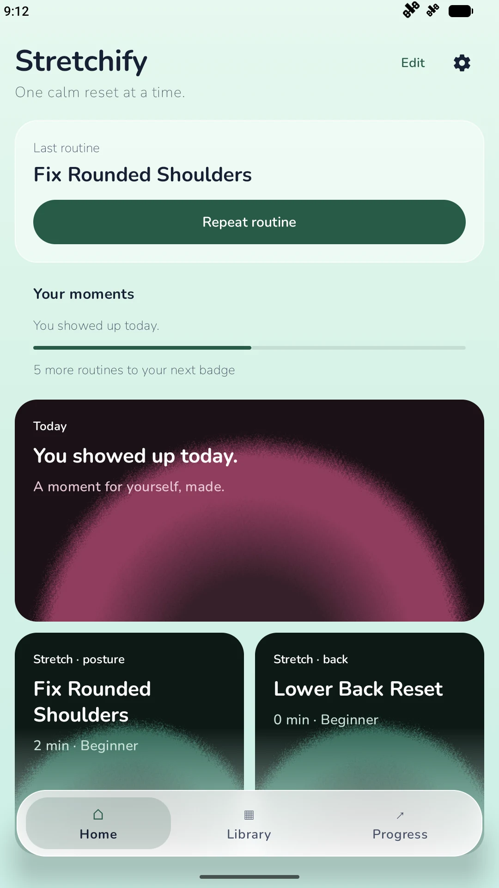
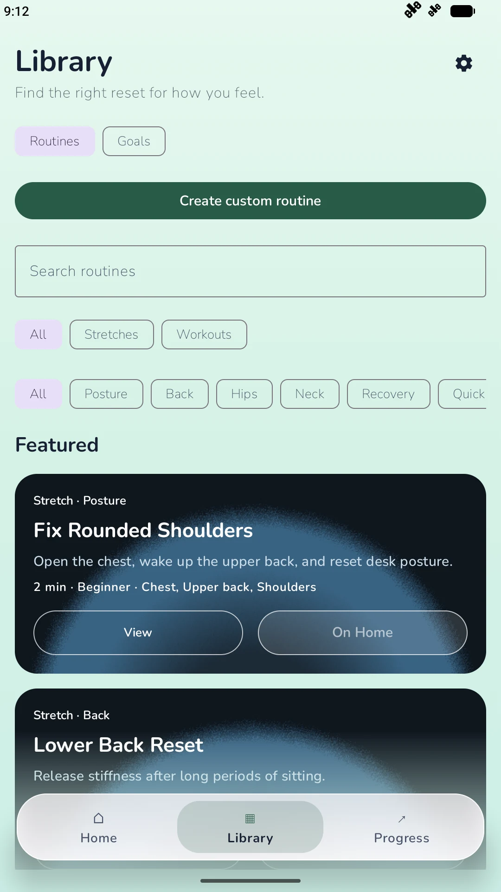
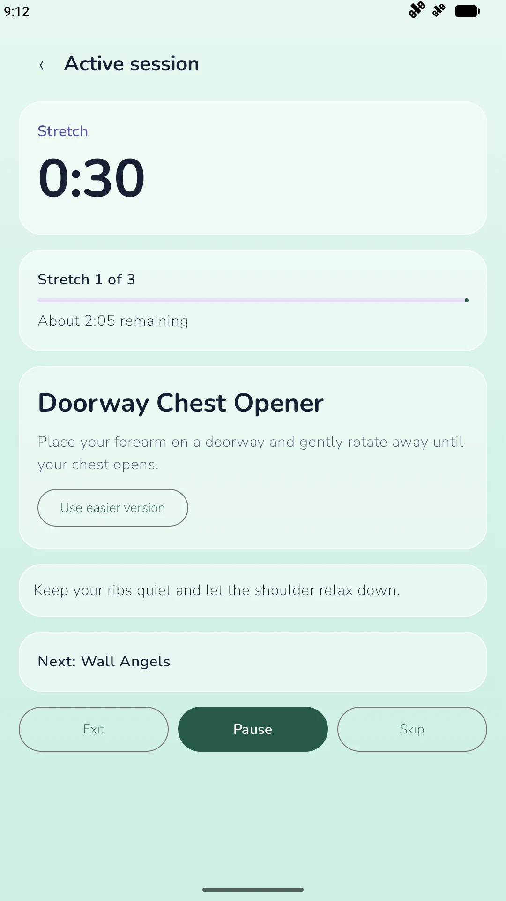
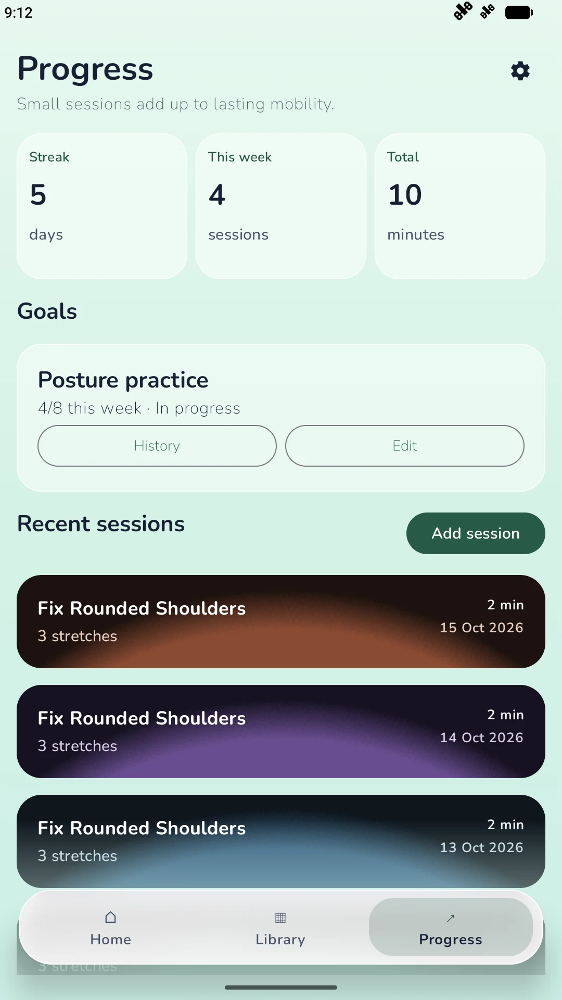

A clear session model
Session phases and timer transitions live in a Kotlin engine, separate from the Compose screens. That makes pause, rest, skip, and completion behavior directly testable.
Explore the session engineA NATIVE ANDROID PROJECT
Guided movement breaks, built for Android.
Step away from the desk. Find your routine. Build a habit that feels good—with a thoughtful app that keeps the next move simple.
An inside look. No download or sign-in needed.

01 / SEE IT IN MOTION
A quick tour of the actual Android app: choose a routine, control your session, check your progress, and make it your own.
Browse stretches and workouts for the moment you’re in.
Guided steps, rest intervals, and a timer you can pause.
Session history and streaks make your consistency visible.
Choose a theme and customize your routines and Home.
The tour begins on Home with sample routine and progress cards. The Library lets you explore routines. Opening a routine reveals its exercises and guidance. Start the session to follow a countdown, pause when you need a moment, and resume at your own pace. The Progress screen shows sample activity and streaks. In Settings, switch from a bright theme to a colorful dark appearance, then return Home.
02 / A CLOSER LOOK
Purposeful screens for a simple daily ritual. These are captures of the running app, with sample activity to illustrate the experience.
Favorite routines and daily momentum, together.

Explore by body area, or build your own.

Clear guidance. A steady rhythm. Room to pause.

Look back on the sessions that add up.
03 / UNDER THE SURFACE
A native Android project by Ronen Giladov . Explore the decisions behind the experience—and the code that makes it work.
Session phases and timer transitions live in a Kotlin engine, separate from the Compose screens. That makes pause, rest, skip, and completion behavior directly testable.
Explore the session engineA session controller and Android foreground service coordinate active sessions, notification controls, and timing as the app moves into the background.
See background session handlingCompose brings together customizable routine cards, multiple color themes, and a liquid shader theme with a gradient fallback on older Android versions.
See the theme systemUnit tests cover timing, progress, and repetition detection. Android instrumentation tests exercise navigation, session controls, and background behavior.
Browse the testsTAKE A LOOK AROUND